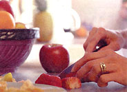
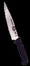
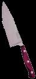
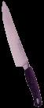
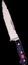
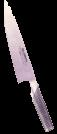

It ain't a kitchen without a good knife.
Not long ago I, too, was a member of the dull-knife clan, ignorantly smashing my tomatoes into slices and blaming my son for dulling the knives (he used them to slice Legos). Fortunately, a friend alerted me to *Northwestern Cutlery in Chicago, where below-retail prices and a knowledgeable staff helped me find affordable knives that could truly slice and dice. I discovered a new culinary world of tear lessly chopped onions and paper-thin pepper strips as I slashed my way through familiar recipes.
Though knife preference varies from one cook to the next, we'll give you some shopping guidelines to eliminate cutlery confusion and help you zero in on your knife needs. We tested a wide range of blades in our kitchen - putting them up against, such hard-to-chop foods as squash, peppers, cilantro and ginger root - then picked our favorites. The cutlery companies recommended here manufacture some quality products and provide excellent customer service.
Chefs knives range from six to 14 inches in blade length, but we narrowed our field of cutlery comparisons to 8-inch chef's knives. Versatile and essential, this knife is used for chopping, dicing, slicing and mincing. A basic knife collection will include an 8-inch chef's knife, a paring knife, a serrated bread knife and, if you're a big meat and poultry lover, a slicer. You'll also need a sharpening steel to keep your knives in good shape.
We rated the knives on price, comfort, quality and performance. First, bear in mind that your knife is an investment and should last you a lifetime. Handle the knife in the store to see if it feels comfortable in your hand and is easy to maneuver. Check the size and weight of the knife. You'll need to decide whether you prefer a wood or a molded polypropylene handle. If you prefer wood, make sure it's treated to prevent moisture and food from collecting on the handle. Also, you should find out the Rockwell hardness of the blade, its steel composition, and whether it's a stamped or forged knife (see "Knife Lingo "). The knife should be sharp enough to cut with precision and without too much effort on your part-you should feel like a pro, not a klutz, when you're using your new knife (for tips on sharpening, see " The Cutting Edge "). If you're not satisfied with the knife take it back it 4, to the store or get in touch with the manufacturer. To find out how to clean and care for your knife, see" Cutlery Care ".
Related info:
Knife Lingo
Cutlery Care
A Better Edge
THE KNIFE THE GOOD NEWS THE BAD NEWS
A Swiss Army in the Kitchen
Made by Victorinox, Forschner knives are a division of Swiss Army Brands, makers of the quintessential pocketknife and other durable and practical goods. :, Forschner Customer Service: (800) 2434074
For the budget-minded cook, these are the best-performing knives for the money. Though usually sold commercially, you can purchase them from Northwestern Cutlery. We looked at the stamped, 8-inch chef's knife with a black Fibrox (textured plastic) handle (#40520), which costs about $22. Forschner knives have lightweight blades, well-balanced, easy-grip safety handles and sharp edges. The blade has a hardness rating of 55 to 56. Made of a softer alloy, this knife is easy to sharpen but will lose its edge quickly.
Although the blade measures eight inches, the large handle and width of the blade make this chef's knife is a little too large for a small-handed person like myself. Although I like the lighter, 6.8-ounce Forschner blade, it isn't quite up to cutting tough food such as acorn squash - you'll want a forged knife for that task. In addition, Forschner knives are sold primarily to chefs who will hone their knives frequently for a razor-sharp edge, so if you're not religious about using your sharpening steel (see " The Cutting Edge ") you should look for a harder blade.
Windy City Slicing
Chicago Cutlery is a subsidiary of World Kitchen and can be found in department stores nationwide. Chicago Cutlery Customer Service: (800) 457-2665
I used to associate Chicago Cutlery with cheap-looking knives encased in plastic packaging, but then I laid eyes on their Legacy-forged line of cut lery. The Legacy 8-inch chef's knife (B7042) is priced at around $63 and has a hardness rating of 52 to 55. This knife has an attractive, hardwood handle that's resin-infused - designed for water resistance and durability. The Legacy performs well because it has a taper-grind edge, which is impressively sharp. All Chicago Cutlery products have a 100-year manufacturer's warrantee.
Most chef's knives average about 8 ounces, but the Legacy chef weighs in at 10.5 ounces - too heavy for me. Many larger-handed people, however, feel comfortable with a heavier knife. Maintaining the taper grind edge on a Legacy can be a bit of a trial. The knife comes with sharpening instructions and an accompanying diagram, but we found them confusing and worried that our honing angle might be off. Also, I wouldn't recommend the $39 Walnut Tradition and Walnut Signature cutlery lines, which have untreated wood handles and an uncomfortably sharp edge on the top edge of the blade. If you're looking for an inexpensive, stamped knife, the Forschner is a better choice for less money.
Get A Grip
OXO, also owned by World Kitchen, is the same company that produces Good Grips, the well-designed kitchen utensils everybody loves. Their products, based on the concept of Universal Design, are designed to be easy to use by everybody. Consumer Information: (800) 5454411, www.oxo.com
The 8-inch chef's knife is an attractive, professional-looking knife with (not surprisingly) the most comfortable handle we've come across yet. It's reasonably priced at around $40. The stamped, full-tang blade contains stainless molybdenum vanadium for durability and has a Rockwell hardness rating of 55. This is the only stamped knife we've seen with a bolster, which 0X0 added for balance; consequently, the knife performs almost as well as the more expensive forged knives. The OXO is the perfect gift knife for the average cook, is easy to find at department stores and is fully guaranteed.
While I'm happy to have this knife in my collection, the handle alone wouldn't convince me to buy it again. If you're a serious cook, spend the extra money for a Wusthof or a Global.
The Creme de la Creme
The centuries-old Ed. Wusthof Dreizackwerk of Solingen, Germany is one of the world's leading manufacturers of quality cutlery.
Customer Service: (800) 356-0281
We tried the Classic (#4582/20c) 8-inch chef's knife, which sells for about $85, has a hardness rating of 56 and has a beautiful, treated wood handle. If you prefer a molded, synthetic handle, you can find it in the Grand Prix line, which has the same blade as the Classic. This cutlery is hand-forged in many labor-intensive steps to ensure quality; even the rivets are guaranteed to stay put for life. After using our chef's knife, we under stand why Consumer Reports gave them a first place rating. Their knife supports the theory that full-tang, forged knives are a better product.
This knife, the Mercedes of the cutlery world, is quite expensive, though prices can vary from the $105 suggested retail price, so shop around. Crate & Barrel charges $84.95 for the Wusthof 8-inch chef, while Northwestern Cutlery sells it for $67.50.
Of Swords and Sushi
Global is a Japanese cutlery manufacturer in Japan that also produces traditional Japanese Bunmei knives. The knives are distributed in the U.S. through Sointu U.S.A. in New York City. Customer Service:, (212) 219-8585
Japanese knives originated a thousand years ago when swordsmiths made blades for Samurai warriors. Today, these knives, with a molybdenum vanadium-stamped steel blade, redefine the word sharp (just watch a sushi chef make paper-thin sashimi from a flank of tuna). With a Rockwell hardness of 56 to 58 degrees, these knives have a double-sided blade that won't need to be sharpened until after the first six months of use. There is no bolster, but these knives still have the balance of a Western knife. Professional chefs and The Culinary Institute of America use these knives; the 8-inch chef's knife sells for about $76.
Globals are intended for slicing, not chopping - though you can still use a slicing motion to mince parsley - and the lightweight blade isn't intended for cutting hard foods such as squash. A good-quality import can be costly and hard to find, so you may have to do a little searching. The handle's all-steel construction repels moisture and bacteria, but some find its cold surface off-putting. I didn't like it at first, but found that I could use the knife for hours on end without hand fatigue. Due to their unconventional construction, Global knives can't be honed with a steel; you'll need to take them to a pro once a year, or sharpen them on a whetstone every four to six months. A whetstone costs about $50, but you can also use an oilstone, which starts at about $20 at Northwestern Cutlery.
*Northwestern Cutlery and Supply, Inc., 810 Lake St., Chicago, II. 60607; (800) 650-9866 or (312) 421-3666; http://members.aol.com/knifman/cutlery.html
|
 |
|
 |
|
 |
 |
 |
|
 |
|
|